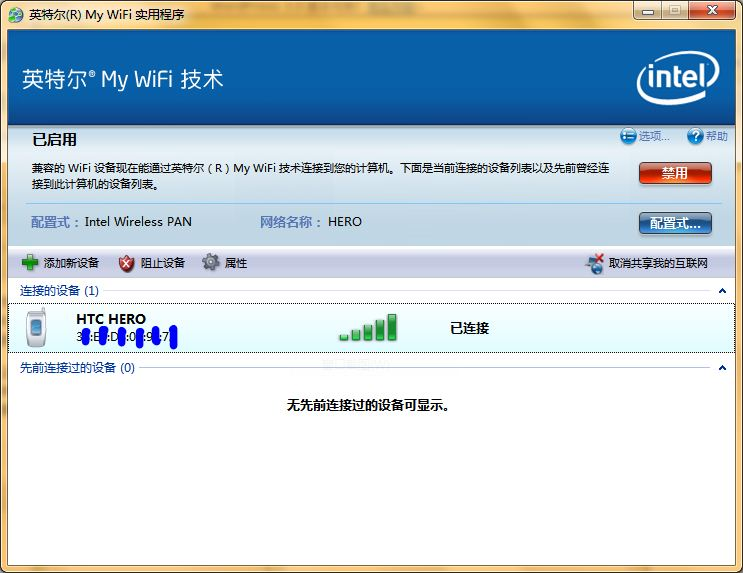

今天为了解决宿舍没有无线AP的情况，让hero可以上网（我只开了20M的GPRS消费）。捣鼓了一下让Hero通过Ad-Hoc连接我的笔记本来共享上网的问题，google一下，找到了两篇可以解决问题的文章，如下：
hTC G3 HERO 如何使用无线网卡共享宽带上网 ad hoc（不推荐，步骤简单，但会丢失当前已记忆的wifi热点）
ADSL+一台无线网卡笔记本实现Hero上网（推荐：步骤多一些，但是可以学到东西）
不过这种方式的局限很大，不适合长久使用（用connectify有所改善*win7 only），而且不能动态获取IP非常麻烦，如果经常要更换AP那是相当痛苦。后来，我更新我的网卡驱动，发现里面包含了Intel® My WiFi软件。驱动在此下载，要独立安装My WiFi应该也没问题。要确保网卡是下面的型号：
Intel英特尔WiFi Link 3945ABG/4965AGN/5100 AGN/5300 AGN/5150/5350/6200/6250/6300
我的是5100 AGN。安装的过程非常流畅，安装后程序会自动启动。这时只要启用了My WiFi技术，就可以在HERO上看WiFi热点了，不过，在你连接之前，还要改一下My WiFi的预配置，因为默认的密码是一串长达64位的随机字符串（真是随机的吗？）。大概类似：
ch@R2ku9tAYz5aOkPDz31TAWXfCGpz72.muvx#lugh9q6e97bo~gzDiuf8DoK+P
如果能在手机上一个个输完，那我真是五体投地。
SSID是默认的计算机名，最好也改一下。如果想要换别的加密方式，比如wep，那必须新建一个配置。因为预配置只允许用WPA2-PSK加密。
这样在计算机上的工作基本搞定了，HERO应该可以正常连接上来。如果一直卡在获取ip阶段，请确认下手机是不是开启了静态IP（无线局域网设置->menu键->高级），如果开启了最好关闭，因为Intel® My WiFi可以动态分配IP。如果要开启静态IP，默认的IP段是192.168.16.2～192.168.16.254。
如果不能上网，
请确定「过滤网络通信量」功能已被禁用（默认是禁用），在「配置式」的编辑界面->「共享」选项卡中。
再看看是否已经开启了「共享我的互联网」功能，在My WiFi的任务栏图标，右键可以开启。如果连接出现问题会有提示。 最后再确定你连接互联网的连接是否已开启了Internet连接共享。具体设置如下图：
{kind=link}
现在正常情况下应该可以正常上网了。
所谓My WiFi技术应该是将无线网卡虚拟成无线AP，这样所有设置都在计算机上进行，在手机就像连接普通无线AP那样方便，这应该是最完美的解决方案了。当然其他设备也可以连接到这个虚拟无线AP来。
最后贴上一张正常使用的软件界面图和任务栏图标的右键菜单状态：
 设置名称”HTC HERO”和图标是我自己改的。
{kind=link}
{kind=link}